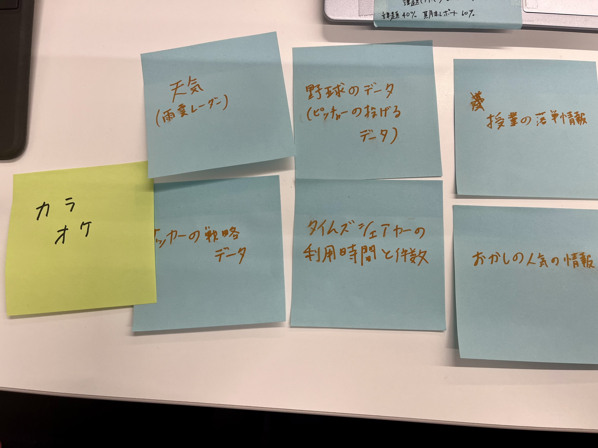

<!DOCTYPE html>
<html lang="jp">
    <head><body style="background-color: rgb(137, 217, 239);"><p style="color: rgb(50, 127, 158);"></p></body>
        <meta charset="UTF-8">
<html lang="jp">
<limk rel="stylesheet" href="./css/style.css"></limk>
<head>
    <meta charset="UTF-8">
    <title>XBP_HPsample</title>
    <link rel="stylesheet" href="./css/style.css">
    <link rel="shortcut icon" href="./images/xbp.ico">
</head>
<body>
    <logotohome>
    <a href="../index.html"></a>
    </logotohome>
    <h1>IoTによるデータ保存</h1><br>
    私たちは、主にスポーツ関係でデータがあると良いものを考えました。<br>
   サッカーや野球、バレーボールなど対戦相手のデータがあることで<br>
   対策を考えたり、相手のい弱点を狙った戦略を立てたりできると思います。<br>
   <br>
    
     


        <p>
            
        </p>


    
<br>
<br>


</body>
</html>


    
<br>
<br>


</body>
</html>
